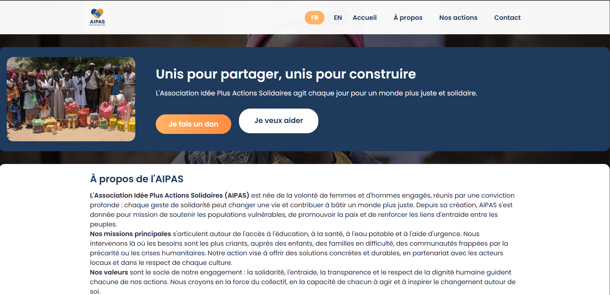
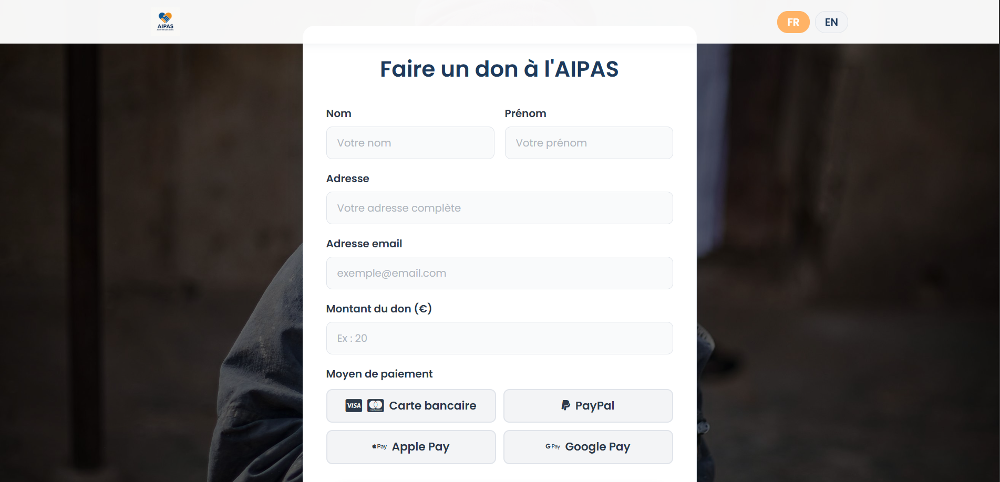
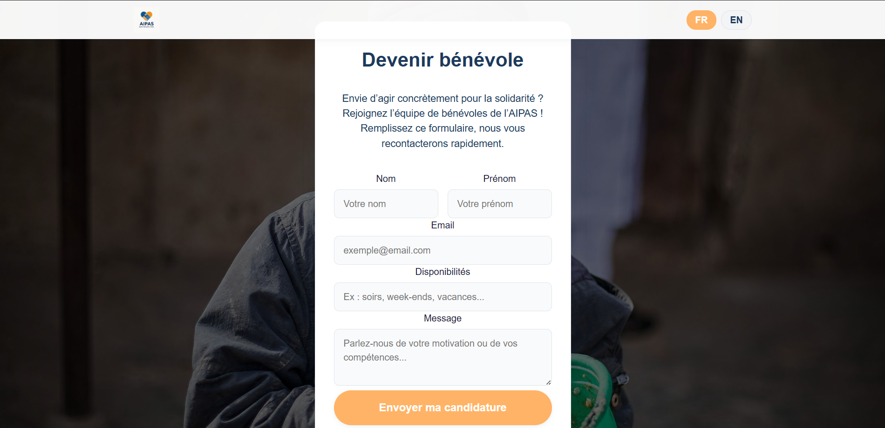
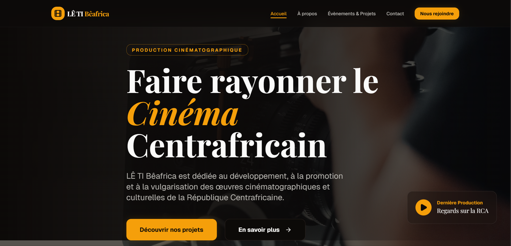
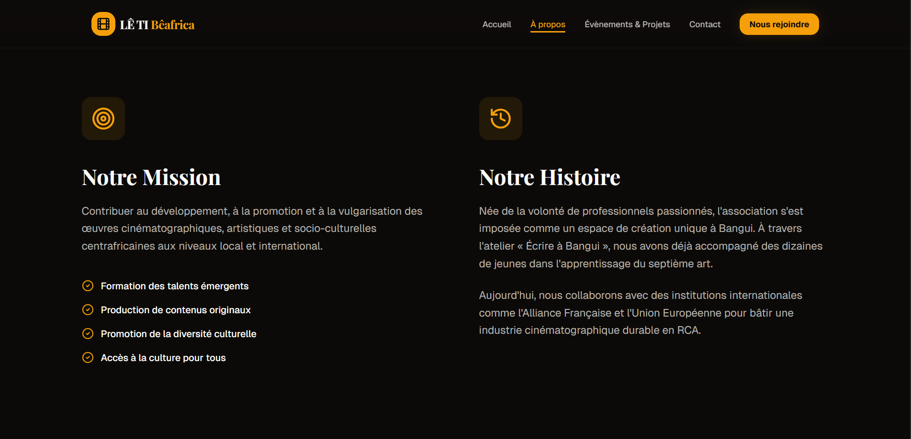
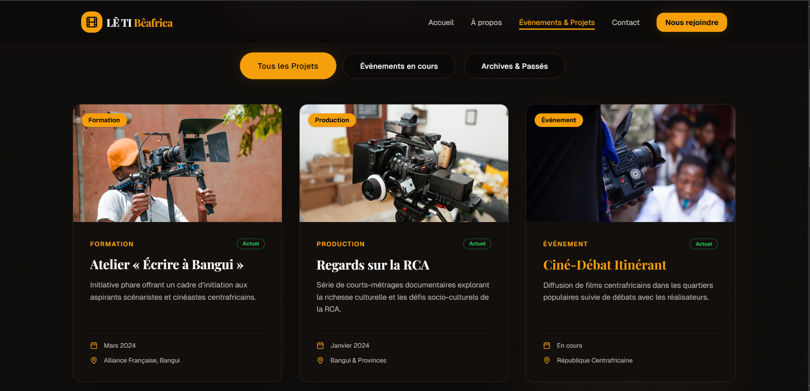
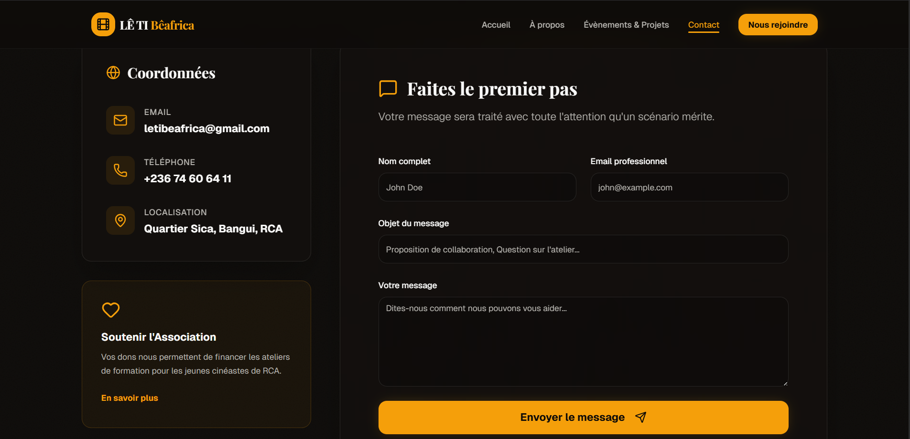

Stages BTS SIO
Cette page présente mes deux stages réalisés pendant le BTS SIO option SLAM : un premier stage d’initiation en première année, puis un stage d’approfondissement en deuxième année, davantage orienté développement.
Pour chaque stage, je détaille l’entreprise d’accueil, les missions confiées, les technologies utilisées, ainsi qu’une sélection de captures d’écran et de ressources associées (code, docs, liens utiles).
Stage de première année
Présentation de l’entreprise
Stage effectué au sein de l’Association Idée Plus Actions Solidaires (AIPAS), une association engagée dans des actions solidaires et sociales visant à accompagner les personnes en difficulté et à favoriser l’entraide au sein de la communauté. L’association met en place différentes initiatives destinées à soutenir les populations vulnérables, notamment à travers des actions d’accompagnement, de sensibilisation et de solidarité. Ce stage m’a permis de découvrir le fonctionnement d’une structure associative et de contribuer à des projets liés au numérique, notamment à travers la réalisation et la mise en place d’un site web présentant les activités de l’association.
Missions réalisées
- Conception de la structure du site web
- Création des différentes pages du siteli>
- Mise en place du design et du style du site
- Intégration de contenu (textes, images, sections)
- Mise en ligne du site sur Github Pages
Technologies utilisées
- HTML : structure du site.
- CSS : mise en forme et design
- JavaScript : interactions et dynamisme.
- Git / Github : gestion du code et déploiement
- Github Pages : hébergement du site web
Captures d’écran
Exemple d’écrans sur lesquels j’ai travaillé (interfaces internes, formulaires, tableaux de données…).



Ressources
Stage de deuxième année
Présentation de l’entreprise
Stage réalisé chez Nom de l’entreprise 2, une organisation dans laquelle j’ai pu travailler sur un véritable projet applicatif en lien avec mon option SLAM (développement).
Missions réalisées
- Participation à la conception ou à l’évolution d’une application métier.
- Développement de nouvelles fonctionnalités (interfaces, traitements, accès aux données).
- Rédaction de documentation technique ou utilisateur.
Technologies utilisées
- Java / POO ou autre langage principal du projet.
- Framework web ou bibliothèque utilisée dans l’entreprise.
- Base de données (MySQL, PostgreSQL, etc.) et outils de versionning (Git).
Captures d’écran
Quelques vues significatives de l’application ou des outils utilisés durant le stage de deuxième année.



